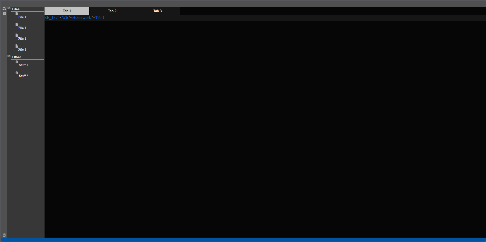

VS Sudio Code Replication
Created: 5/13/24
Main Purpose
The main purpose of this project was to recreate a basic representation of visulal code. Within that framework, I applied a text area for typeing, changing tabs, and a tray to contain files. Their are also non functional features, such as the breadcrumbs.